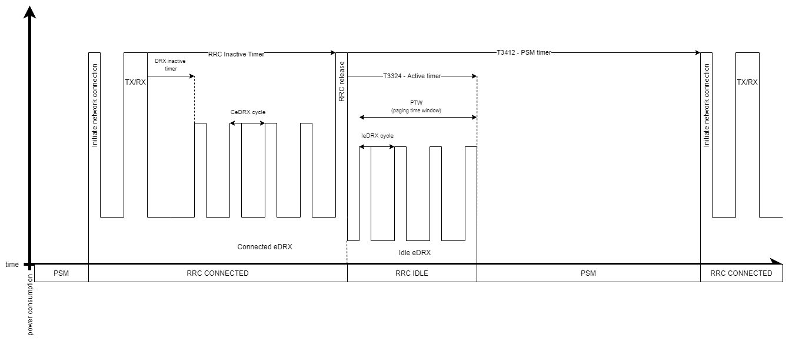
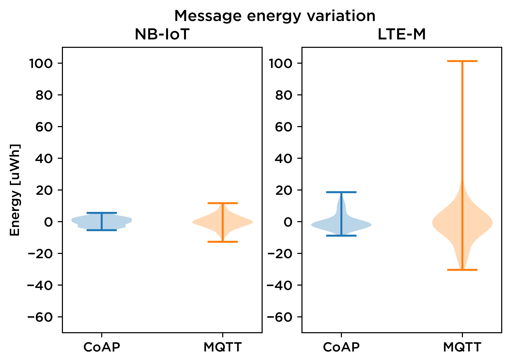
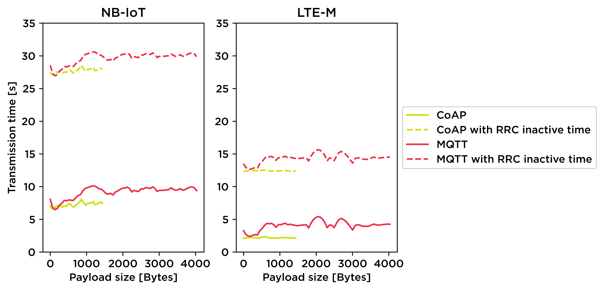
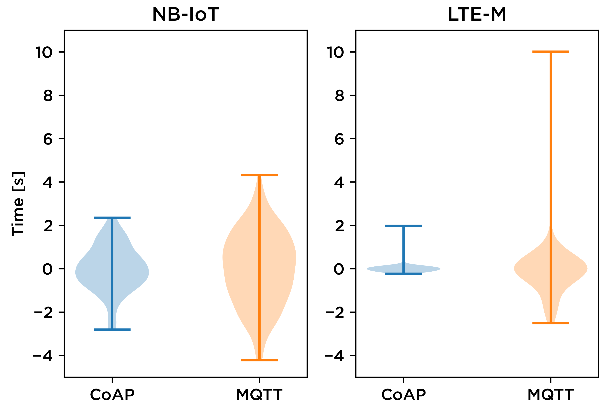

Cloud connectivity and protocols for the Internet of Things
Speakers

Markus Tacker
Senior R&D Engineer
Nordic Semiconductor
Markus.Tacker@NordicSemi.no
Twitter: @coderbyheart

Carl Richard Fosse
Application Engineer
Nordic Semiconductor
Agenda
- Application data
- Data protocols
- Transport protocols
- How to measure data usage
- Wireless radio protocols
- Energy consumption considerations
- Summary
- Ways to your first proof-of-concept
Application data

Typical IoT Data Protocol Configuration
The four kinds of data
- Device State
- Device Configuration
- Past Data
- Firmware Updates
1. Device State
- sensor readings (like position, temperature)
- information about its health (like battery level)
Because the latest state should be immediately visible: buffer data in a Digital Twin.
Update Device State only if needed
- implement situational awareness on the device
- only send relevant data
- did a sensor reach a critical threshold?
- has enough time passed since last update?
- is the connection good enough?
2. Device Configuration
- change behaviour of device in real time (e.g. sensor sensititiy, timeouts)
- configure physical state (e.g. locked state of a door lock)
3. Past Data
Cellular IoT devices need to send data about past events: they will be offline most of the time.
4. Firmware Updates
- 2-3 magnitudes larger than a control message (~250 KB)
- notification via control channel (MQTT)
- download via data channel (HTTP): less overhead, supports resume
Summary: Application data
- great potential for optimization
- initiating and maintaining network connection is magnitudes more expensive compared to other device operations (for example reading a sensor value)
- invest a substantial amount into optimizing these when developing an ultra-low power product
Data protocols
- JSON
- Alternatives to JSON
- Flatbuffers
- CBOR
JSON
{
"v": {
"lng": 10.414394,
"lat": 63.430588,
"acc": 17.127758,
"alt": 221.639832,
"spd": 0.320966,
"hdg": 0
},
"ts": 1566042672382
}“default” data protocol for IoT (AWS, Azure, Google Cloud)
üëç human readable
üëç schema-less (self-describing)
üëé overhead
Possible Optimizations
GPS location message
02 36 01 37 51 4b 73 2b
d4 24 40 09 68 06 f1 81
1d b7 4f 40 11 68 cd 8f
bf b4 20 31 40 19 e6 5d
f5 80 79 b4 6b 40 21 1a
30 48 fa b4 8a d4 3f 29
00 00 00 00 00 00 00 00
09 00 e0 cf ac f6 c9 76
42JSON
114 bytes
without newlines
Protocol Buffers
65 bytes (-42%)
source
Flatbuffers
- evolution of Protocol Buffers
- access a buffer without parsing
- smaller library, C implementation exists
- wire format size a little bigger compared to Protocol Buffers
- schema-less (self-describing) messages are supported
- NOT supported in Zephyr/NCS
CBOR
- maps JSON to binary structures
- zero configuration needed between exchanging parties
- support in Zephyr (tinycbor)
CBOR: example
GPS location message
A2 61 76 A6 63 6C 6E 67
FB 40 24 D4 2B 73 4B 51
37 63 6C 61 74 FB 40 4F
B7 1D 81 F1 06 68 63 61
63 63 FB 40 31 20 B4 BF
8F CD 68 63 61 6C 74 FB
40 6B B4 79 80 F5 5D E6
63 73 70 64 FB 3F D4 8A
B4 FA 48 30 1A 63 68 64
67 00 62 74 73 1B 00 00
01 6C 9F 6A CC FEJSON
114 bytes
without newlines
CBOR
86 bytes (-24%)
source
Summary: Data protocols
Look into denser data protocols!
JSON is for Humans.
- devices always™ send the same structure:
no need to transmit it - less data to send
- less money spent on data (grows linear with № of devices)
- less energy consumed = longer device lifetime
- lower chance of failed transmit
Transport protocols
- MQTT+TLS
- MQTT-SN+(D)TLS
- CoAP/LWM2M+(D)TLS
MQTT+TLS
common protocol for “ecommerce” cloud vendors
(AWS, Azure, Google Cloud)
- great fit for asynchronous, event oriented communication: MQTT is bidirectional pub/sub model
- overhead:
- topic name in every MQTT package
№ of topics per device: ~3 - TLS handshake with AWS IoT broker: ~10 KB
- topic name in every MQTT package
- Supported out of the box in nRF Connect SDK
MQTT-SN+(D)TLS
- optimized version designed specifically IoT
- supports UDP
- use numeric IDs instead of strings for topic names
- better offline support
- not supported out of the box in nRF Connect SDK
- not supported by cloud vendors: needs a (stateful) Gateway
CoAP/LWM2M+(D)TLS
- common protocol in Telco clouds (Verizon’s Thingspace, AT&T’s IoT Platform)
- typically used for device management (carrier library)
- support in nRF Connect SDK (CoAP client sample, LwM2M client sample)
- not supported by cloud vendors: needs a (stateful) Gateway.
Proof-of-concept AWS IoT-LwM2M Gateway: github.com/coderbyheart/leshan-aws
How to measure data usage
- measure during development already: important input on picking the right connectivity partner
- measuring at multiple endpoints tricky (MQTT + HTTP), does not measure failed transmits
- nRF9160 modem provides connectivity statistics
Enable connectivity statistics
Use AT%XCONNSTAT=1 to tell the modem to start collecting connectivity statistics
Read current connectivity statistics
Use AT%XCONNSTAT? to read the current connectivity statistics
static struct k_delayed_work connstat_work;
static int query_modem(const char *cmd, char *buf, size_t buf_len) { ... }
static void connstat_work_fn(struct k_work *work)
{
query_modem("AT%XCONNSTAT?", connStatBuffer, sizeof(connStatBuffer));
// NOTE: k_uptime_get_32() cannot hold a system uptime time
// larger than approximately 50 days
printk("Connection stats: %s | Uptime: %d seconds\n",
connStatBuffer, k_uptime_get_32() / 1000);
// Schedule next run
k_delayed_work_submit(&connstat_work, K_SECONDS(60));
}
k_delayed_work_init(&connstat_work, connstat_work_fn);
k_delayed_work_submit(&connstat_work, K_SECONDS(60));You can see a full diff of how I added this to one of my applications here.
Connectivity statistics output
Connection stats: %XCONNSTAT: 0,0,14,16,748,134 | Uptime: 5041 secondsSyntax
%XCONNSTAT: <SMS Tx>,<SMS Rx>,<Data Tx>,<Data Rx>,<Packet max>,<Packet average>- SMS Tx: total number of SMSs successfully transmitted
- SMS Rx: total number of SMSs successfully received
- Data Tx: total amount of data (in kilobytes) transmitted
- Data Rx: total amount of data (in kilobytes) received
- Packet max: maximum packet size (in bytes) used
- Packet average: average packet size (in bytes) used
Caution
Do not use the connectivity statistics in applications which use the LwM2M carrier library.
This library manages the collection of connectivity statistics and will turn them on and off on its behalf. If your application interferes with this statistics collection it will result in incorrect measurements in the carrier’s device management solution.
Wireless radio protocols

- 375 kbps downlink, 300 kbps uplink
- ~100 kbps application throughput running IP
- supports roaming (same as LTE)
- typically uses frequency bands above 2 Ghz
- ms-latency
- 60 kbps downlink, 30 kbps uplink
- typically uses frequency bands below 2 Ghz
- no roaming support (some Telcos do offer custom solution)
- good indoor/underground penetration characteristics
- long range
Comparison
LTE-m
for medium throughput applications requiring low power, low latency and/or mobility
- asset tracking
- wearables
- medical
- POS
- home security
NB-IoT
for static, low throughput applications requiring low power and long range
- smart metering
- smart agriculture
- smart city
Energy consumption considerations
Carl Richard Fosse
My master thesis research
“Power Consumption modeling of TCP and UDP over low power cellular networks for a constrained device”
- TCP represented by MQTT
- UDP represented by CoAP
- Tested both protocols over NB-IoT and LTE-M, using the nRF9160.
- Used the data to empirically model the power consumption of the device.
Experiment setup: Components
Hardware: nRF9160DK v0.8.5
SDK: v1.2.0
Measurement unit: Otii ARC
Network provider: Telenor LTE-M and NB-IoT
Power measurement setup will be more thoroughly covered in our webinar the 9th of December.
Experiment setup: Firmware
- One application for MQTT and one for CoAP
(available on GitHub) - Long PSM interval with regular transmissions and increasing payload
- Average sleep current ~200µA
Energy consumption factors: Application protocols
- Establishment of connection
- Especially relevant for TCP
- Acknowledgements
- Payload size
- Protocol defined limits
- Maximum transmission unit (MTU)
- Maximum segment size (MSS)
Energy consumption factors: Cellular network
Connection
RRC inactive timer
Reception quality
Additional parameters - see the Online Power Profiler
Time diagram

In reality


Some results
Transmission energy

Transmission energy

Transmission time

Transmission time variation

Important observations: Application protocols
- MQTT
- TCP is not ideal for low power applications
- MQTT is a popular and well supported protocol
- CoAP
- Less overhead compared to MQTT
- Enables reliable UDP
- Not that popular
Important observations: Cellular standards
- LTE-M
- High speed, high capacity
- Power consumption not correlated with payload size
- More “spurious” energy consumption
- NB-IoT
- Slow, low capacity
- Energy consumption is linearly dependent with payload size
Transfer large amounts of data rarely
rather than small amounts often.
Summary
- no silver bullet - multiple conflicting dimensions need to be considered
- highly depends on use case scenario
- ultra-low power relevant in all scenarios
Ways to your first proof-of-concept
- nRF Connect for Cloud
- Bifravst
nRF Connect for Cloud
- cloud resources (AWS) provided by us
- our cellular IoT Development Kits are preconfigured to connect
- you can focus on modifying the sample application
- Building NCS applications with Docker in ~2 minutes
Bifravst
- concrete end-to-end example for an ultra-low power cellular IoT product in the asset tracker space
- end-to-end example: firmware ü°ò cloud ü°ò mobile web app
- runs in your AWS account
Azure support in progress - fully open-source
3-clause BSD license (software) and the Nordic 5-clause BSD license (firmware) - firmware developed from ground up with power consumption in mind
Thank you & happy connecting!
Please share your feedback!

Latest version: bit.ly/nwiotp